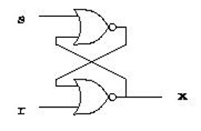
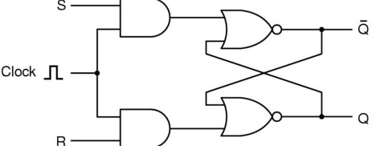
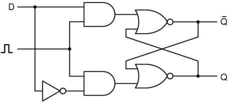
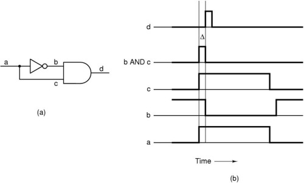
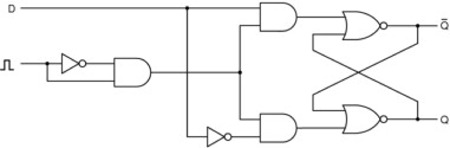
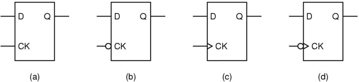
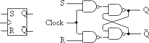
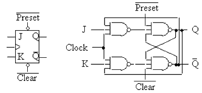
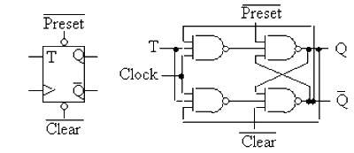

Latches and Flip-Flops
Latches
output value depends on the history of input values
allows at most one input to be 1 at any time

Logic Symbol
State Transition Table
|
s |
r |
x (t+1) |
|
0 |
0 |
x(t) |
|
1 |
0 |
1 |
|
0 |
1 |
0 |
|
1 |
1 |
undefined |
Timing Diagram
Clocked SR Latch
Circuit Diagram

Logic Symbol
State Transition Table
| Clock | S | R | Q |
| 0 | X | X | No Change |
| 1 | 0 | 0 | No Change |
| 1 | 0 | 1 | 0 |
| 1 | 1 | 0 | 1 |
| 1 | 1 | 1 | undefined |
Timing Diagram
Clocked D Latch
Circuit Diagram

Logic Symbol
State Transition Table
| Clock | D | Q |
| 0 | X | No Change |
| 1 | 0 | 0 |
| 1 | 1 | 1 |
Timing Diagram
Flip-Flops
Level-triggered vs. Edge-triggered
Level-triggered
level-sensitive
input signals may affect the output during the entire interval when the clock signal is valid
Edge-triggered
edge-sensitive
input signals may affect the output only during the transition moment of the clock signal -- i.e., output changes only as a result of clock transition
a clock-pulse generator

D Flip-Flops (Edge-triggered)
Circuit Diagram

Logic Symbol
State Transition Table
| Clock | D | Q |
| no pulse | X | No Change |
| ^ | 0 | 0 |
| ^ | 1 | 1 |
Timing Diagram
Positive D-Latch, Negative D-Latch, Positive Edge-triggering D Flip-Flips and Negative Edge-triggering D Flip-Flops

Example: Timing diagram (in-class discussion)
S-R Flip-Flops

Clock S R Q(t+1) 0 X X Q(t) ^ 0 0 Q(t) ^ 1 0 1 ^ 0 1 0 ^ 1 1 ------
J-K Flip-Flops

Clock J K Q(t+1) 0 X X Q(t) ^ 0 0 Q(t) ^ 1 0 1 ^ 0 1 0 ^ 1 1 [Q(t)]'
T Flip-Flops

Clock T Q(t+1) 0 X Q(t) ^ 0 Q(t) ^ 1 [Q(t)]'